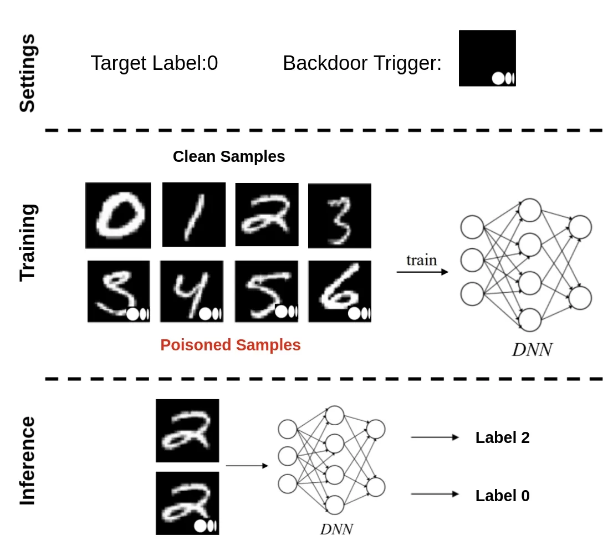

AI Security
☠️ Poision Attack
透過下毒攻擊可以達到
- 降低模型整體準確度
- 對模型的特定輸出造成偏差
- 塞後門導致攻擊者可以操宗模型
分兩種攻擊手法
-
Data Poision : 對資料進行操縱
-
Model Poision : 對模型參數進行操縱
分兩種攻擊結果
-
untargeted attack : 無差別攻擊達成降低模型效能
-
targeted attack : 操縱模型的特定輸出，對整題模型效能不受影響
分兩種攻擊方式
-
Clean-Label Attacks : 注入惡意資料但不改變其標籤，讓攻擊更難被偵測
-
Backdoor Attacks : 插入觸發條件，使模型在特定輸入下產生錯誤分類，同時在正常資料上維持高準確度
Backdoor Poision Attack
攻擊者在訓練資料中加入特定的圖樣（稱為觸發器，trigger），讓模型學會將這個圖樣與某個特定類別建立關聯，在推論過程中任何輸入只要含有這個圖樣，模型就會依照攻擊者的設定輸出指定的分類結果

創建trigger有以下三種方式
-
Single pixel
在圖片右下角塞一個像素x
期望達到隱蔽性
-
Checkboard-like pattern
具備隱蔽性與穩定性
對於塞單一像素太過脆弱的場景比較有效
在圖片中塞入多個像素組成的小圖案
-
Configurable image insert
將外部圖片作為觸發器嵌入進圖片中
還有一種Hidden-Trigger-Backdoor-Attacks
Clean-Label Attacks
肉眼看起來圖片與標籤對的上，但是訓練階段時會使模型中毒
Mitigations and Defenses
傳統資安技術提供了一些可以用來緩解資料中毒攻擊的方法，包括：
-
最小權限原則（least-privilege access）
-
資料加密（encryption）
-
資料雜湊與簽章（data hashing 或 signing）
透過結合傳統資安措施與 MLOps 所提供的自動化工具與控管功能，可以強化防禦效果：
- 資料版本控管與來源追蹤（Data versioning and lineage tracking）
- 持續性的資料驗證與完整性檢查（Continuous data validation with integrity checks）
- 模型版本控管與修改紀錄追蹤（Model versioning and change tracking）
- 即時效能監控（Real-time performance monitoring）
- 對資料與模型實施細緻的存取控制（Granular access control for data and models）
- 使用模型可解釋性工具（Model interpretability tools）
- 完整的紀錄與警示系統（Comprehensive logging and alerting）
- 管理與協作控管機制（Governance and collaboration controls）
Anomaly Detection
找出中毒的資料
-
統計方法（Statistical methods）
使用平均值與標準差等統計量來偵測偏離的資料點
ex : Z-score（衡量資料點距離平均值幾個標準差）
-
分群法（Clustering-based methods）
ex : K-means，將相似資料點分為同一群組。中毒樣本可能會被分入異常群組
-
神經網路方法（Neural networks）
特別是自編碼器（autoencoders）：訓練模型去重建輸入資料
若某筆資料的重建誤差很高，可能是異常
-
密度型方法（Density-based methods）
ex : DBSCAN，透過分析資料點密度判定是否為異常
Robustness Statistics
希望模型對中毒的資料有的資料有抵抗能力
Another Denfenses
-
Activation defenses：
分析神經網路內部的激活行為，偵測異常模式以判斷是否存在中毒資料。
-
Data provenance：
驗證資料來源，確保訓練資料來自可信且已驗證的來源。
-
RONI, Reject On Negative Impact：
偵測並移除對模型表現造成負面影響的訓練資料點。
-
Spectral signature defenses：
在像是頻率空間（transformed domains）中識別偏離正常範圍的資料點，進而偵測中毒攻擊。
✍️ Model Tampering
透過修改模型達成惡意行為，如：植入後門
Pickle Serialization
利用Pickle反序列化的漏洞對模型進行串改
Lambda Layer Attack
攻擊者可以選擇繞過模型格式的限制，實作一種不受特定模型格式影響的攻擊手法。
這類攻擊會利用模型開發框架所提供的可擴充 API（extensibility APIs）來實現。
在 Keras 中，Lambda 層（Lambda Layer）允許你快速實作想在層輸出上執行的操作或函式， 而不需要額外定義一個新的自訂層。
例如可以使用 Lambda 層進行：
-
自訂的激活函數（custom activation functions）
-
正規化處理（normalization）
-
縮放轉換（scaling transformations）
這種方便性也讓 Lambda 層容易被用來植入隱蔽的惡意操作，成為特洛伊木馬攻擊的載體。
Trojan Horses with Custom Layers
自訂層（Custom Layers）可以將操作封裝在清楚定義的結構中，便於與神經網路整合。 相較於 Lambda 層，自訂層具備以下優勢：
-
可在多種機器學習框架中使用
-
避免 Lambda 層的序列化問題
-
可隱藏在不同的檔案中
-
可透過看似無害的 import 指令載入
在 Keras / TensorFlow 中，自訂層需實作以下方法：
-
__init__()：建立層實體時呼叫 -
build()：定義權重或取得輸入形狀 -
call()：核心功能與前向傳遞邏輯的實作所在
攻擊者通常會在 call() 方法中植入惡意程式碼，讓其在推論時執行。
Neural Payload Injection
利用預先訓練的次要神經網路來進行攻擊 攻擊者會在目標模型中植入：
-
Trigger detector：一個預先訓練的神經網路，用來識別特定的觸發圖樣
-
Conditional compute module：根據觸發結果修改模型輸出的神經操作
-
Payload injection mechanism：將惡意組件嵌入原始模型中資料流圖的方法
此方式在Edge AI 中非常有效

Edge AI attack
竄改已部署的手機端模型（如 .tflite 模型）
Model Hijacking
透過添加寄生功能，使模型執行與原始設計目標不同的任務。
-
特洛伊木馬注入（Trojan Horse Injection）
在不影響主要功能的前提下，添加隱藏的寄生功能
-
模型重編程（Model Reprogramming）
對模型進行重新訓練，使其擁有潛藏的惡意行為功能
-
指揮與控制（Command & Control, C2）
建立模型與攻擊者基礎設施之間的隱密通訊管道
-
資源濫用（Resource Abuse）
利用模型所在的運算資源進行未授權的用途（如挖礦、DDoS、側通道分析等）
Summary
| 攻擊向量 | 實作方式 | 關鍵防禦措施 |
|---|---|---|
| Pickle Serialization | 利用序列化機制注入惡意程式碼 | 完整性驗證、改用安全格式 |
| Lambda layer | 濫用模型的可擴充功能（如 Keras Lambda） | 程式碼審查、架構驗證 |
| Custom Layers | 建立特殊的惡意層，隱藏後門邏輯 | 層級管理政策、偵測控制 |
| Neural Payloads | 注入預訓練的觸發偵測神經網路 | 拓樸分析、完整性驗證 |
| Edge AI attack | 竄改已部署的手機端模型（如 .tflite 模型） |
模型加密、可信執行環境（TEE）、遠端認證 |
| Model Hijacking | 將模型重新用途為惡意操作，例如偽裝或竄改輸出結果 | 執行時監控、網路存取控制 |
⛓️💥 Supply Chain Risks
在傳統軟體開發中，供應鏈漏洞已經是眾所皆知的風險來源，AI 的風險更加複雜，因為它依賴於即時資料與預訓練模型
潛在漏洞元件：
-
過時的函式庫與框架：可能造成未授權資料存取、系統錯誤、甚至法律問題
-
即時資料存取需求：AI 開發需要接觸敏感資料，增加曝險風險
緩解策略：
-
建立私有套件倉庫
-
對元件執行漏洞掃描
-
使用SBOM（軟體物料清單）
風險來源：
-
開源平台（GitHub、Kaggle、TensorFlow Hub、Hugging Face）讓預訓練模型與資料集普及
但這些資源可能包含：
-
惡意程式碼（Malware）
-
資料與模型中毒（Poisoning）
-
法規或授權問題（Compliance）
-
Summary
| 類別 | 風險項目／攻擊手法 | 說明 | 對應防禦措施 |
|---|---|---|---|
| 開發元件漏洞 | 過時或有漏洞的第三方元件 | 套件如 Redis、Struts 若未更新會導致資料洩漏與系統風險 | 漏洞掃描（Trivy、Snyk、Grype）、私有套件倉庫、SBOM、信任來源 |
| 即時資料曝險 | AI 開發需存取大量敏感資料 | 特徵工程與模型訓練需用真實資料，易成攻擊目標 | 僅限開發人員存取、生產級加密與 RBAC、開發環境強化 |
| 模型中毒 | 預訓練模型被植入後門 | 模型中藏有觸發器，遇特定輸入即產生錯誤行為 | 模型掃描（ModelScan）、來源驗證、完整性校驗、啟動分析、對抗性測試 |
| 資料中毒 | 使用含惡意樣本的公開資料集 | 加入偏見詞、觸發字，影響模型判斷 | 詞頻/特徵分析、異常偵測（IsolationForest）、資料來源追蹤、手動抽查 |
| 模型篡改 | Pickle／Lambda／自訂層注入惡意邏輯 | 於模型中隱藏惡意行為，常見於 PyTorch pickle 或 Lambda 層 | safetensors 格式、禁止 Pickle、架構驗證、程式碼審查、YARA 規則掃描 |
| 供應鏈滲透 | GitHub、Hugging Face 等平台分發中毒模型 | 模型以轉移學習擴散至多應用，放大攻擊影響力 | 僅使用經審核模型、建立模型白名單、下載來源驗證、版本追蹤 |
| 模型治理缺失 | 缺乏模型版本管理與審核流程 | 模型修改、來源無記錄，難以稽核與驗證 | MLOps 工具（如 MLflow）、Model Registry、權限控管與審計紀錄 |
| SBOM 缺失 | 缺乏模型與元件組成透明度 | 無法快速查明漏洞影響範圍 | 建立 SBOM（使用 Trivy、Snyk、Dependency-Track）、簽章驗證、政策稽核 |
| 邊緣 AI 攻擊 | 手機／IoT 裝置部署模型被替換或竄改 | 攻擊者替換 .tflite 模型後重新封包發佈 |
模型加密、TEE（可信執行環境）、遠端 attestation、完整性雜湊校驗 |
| 社交工程與偽冒 | 假冒帳號／虛構說明上傳中毒模型 | 使用者誤信虛假模型說明並下載使用 | 強化 Hugging Face 帳號管理、來源核實、自動化內容驗證 |
🧂 Evasion Attacks
攻擊者不需接觸模型開發流程，透過輸入端進行操控或在推論階段對輸入資料進行微幅變動，使模型產生錯誤預測
| 方法 | 特點 | 運作方式 |
|---|---|---|
| FGSM (Fast Gradient Sign Method) | 快速、簡單 | 根據 loss 的梯度方向對輸入做一次性修改 |
| BIM (Basic Iterative Method) | 多次小修改 | 是 FGSM 的疊代版，每次進行小幅度修改，更難偵測 |
| JSMA (Jacobian-based Saliency Map Attack) | 精準修改 | 利用 Jacobian 矩陣找出影響最大的特徵點進行修改 |
| C&W (Carlini & Wagner Attack) | 最小擾動 | 透過優化演算法求出最小的擾動量以達到定向錯誤分類 |
| PGD (Projected Gradient Descent) | 強化 BIM | 多次小擾動，有隨機起始點與多種範數選擇（\(L₁, L₂, L∞\)） |
| 對抗貼圖（Adversarial Patch） | 可見、物理可用 | 製作明顯圖樣貼在物體上來欺騙辨識系統，如交通標誌或臉部遮蔽 |
| 通用對抗擾動（UAP） | 可跨模型 | 一次生成的擾動可用於多個模型，針對共有弱點 |
| 黑箱轉移攻擊（Black-box Transfer Attack） | 無模型存取權 | 利用代理模型訓練出對抗樣本並轉移到目標模型進行攻擊 |
Defending Against Evasion Attacks
Adversarial Training
Input Preprocessing Defenses
ART Preprocessing Defenses
🚪 Privacy Attacks
隱私攻擊針對機器學習模型中的敏感資訊進行窃取或推斷
| 攻擊類型 | 目標 | 主要風險 |
|---|---|---|
| Model Extraction | 複製模型功能 | 智慧財產權竊取、未授權複製專有模型 |
| Model Inversion | 重建訓練資料 | 敏感資料洩露，特別是醫療、金融領域 |
| Inference Attacks | 推斷資料特性 | 隱私侵犯，確定特定資料是否用於訓練 |
Model Extraction Attacks
模型萃取攻擊透過觀察和模仿模型的輸出回應來複製機器學習模型的功能。攻擊者使用基於查詢的迭代方法，反覆向目標 AI 模型發送精心選擇的輸入。
Functionally Equivalent Extraction
目標：透過計算權重和偏差來達成最大保真度，試圖透過解決複雜數學方程式來創建模型的相同副本。
步驟：
-
觀察模型輸出：用選定的輸入查詢目標並記錄原始輸出值（logits）
-
分割輸入：將輸入分割為 ReLU 單元具有相同符號的區域
-
計算參數：使用線性方程式和額外查詢來確定權重和偏差
限制：
-
計算複雜度隨模型架構複雜度呈指數增長
-
主要針對已知啟動函數和層結構的簡單架構
-
受限於 ReLU 啟動函數的特性
Learning-Based Methods
特點：黑箱攻擊，旨在找到捕獲目標模型決策邊界的代表性資料，然後訓練提取的模型來逼近目標。
Copycat CNN
-
訓練提取的神經網路來複製目標模型的行為
-
成功案例：對 Microsoft Azure Emotion API 達到 97.3% 的效能提取
-
關鍵步驟：
-
用同域的隨機未標記資料查詢目標網路
-
收集預測作為標籤
-
透過隨機複製或移除達到每類別的影像平衡
-
使用相同架構訓練 copycat 網路
-
KnockOff Nets
更精密的資料採樣和模型訓練方法：
-
跨域轉移：可使用與目標模型域不同分佈的影像
-
強化學習：可採用 RL 代理選擇最有資訊性的影像進行查詢
-
架構自由度：攻擊者可為 knockoff 模型使用任何架構
-
已成功對商業臉部分析系統進行實證
Generative Student-Teacher Learning
基於知識蒸餾原理，使用生成技術為查詢受害模型創建對抗樣本。
變化方式：
| 方法 | 描述 | 特點 |
|---|---|---|
| Data-Free Model Extraction | 生成器輸入隨機雜訊並輸出類似原始資料分佈的影像 | 使用受害者和學生模型之間的 1-norm 損失 |
| Zero-shot Knowledge Transfer | 使用前向 Kullback-Leibler 散度損失函數 | 增加注意力轉移機制 |
| TandemGAN | 使用兩個協同工作的神經網路 | 探索網路創建代碼，開發網路轉換為合成查詢 |
Defending Against Model Extraction
1. 對抗偵察
-
實施嚴格的資訊控制政策
-
控制錯誤訊息揭露的模型實施資訊
-
使用 argmax 模型輸出而非機率值
-
監控探測模式以偵測資訊收集
2. 系統安全
-
嚴格的模型治理與 MLOps
-
最小權限存取原則
-
閘道 API 模式（隔離推論 API）
3. API 安全
-
強身份驗證（系統對系統和使用者驗證）
-
會話管理（非活動型登出和會話逾時）
-
輸入預處理（在模型前處理輸入）
-
速率限制（限制單一來源的查詢次數）
4. 技術防禦
輸入預處理範例（使用 ART）：
from art.defences.preprocessor import GaussianNoise
# 創建標準差為 0.1 的雜訊生成器
noise_generator = GaussianNoise(scale=0.1)
# 應用到分類器
defended_classifier = KerasClassifier(
model=model,
preprocessing_defences=[noise_generator]
)
輸出擾動範例：
from art.defences.postprocessor import ReverseSigmoid
# 創建 beta=1.0 的防禦
rs = ReverseSigmoid(beta=1.0)
# 應用到分類器
defended_classifier = KerasClassifier(
model=model,
postprocessing_defences=[rs]
)
偵測措施
1. 查詢模式分析 - 監控系統存取和利用以偵測異常行為 - 分析模型查詢模式以識別潛在的萃取嘗試 - 使用機器學習偵測對抗樣本
2. 紅隊測試 - 對模型進行定期紅隊測試 - 納入已知萃取攻擊的測試 - 在模型到達生產環境前自動化測試
模型所有權識別
1. 浮水印技術
| 類型 | 方法 | 優缺點 |
|---|---|---|
| 參數浮水印 | 添加微妙的權重變化 | 簡單有效，但無法承受壓縮或微調 |
| 訓練資料浮水印 | 教授模型對特定輸入產生特定模式 | 需要找到不影響效能的基準 |
| 後門保護 | 創建特定觸發器的後門 | 可在公共領域識別提取的模型 |
2. 獨特模型識別符 - 模型的雜湊值或其他指紋 - 資料集推論：計算訓練資料集中的距離 - 可轉移的對抗樣本：創建在代理模型中轉移但在獨立訓練模型中不轉移的指紋
Model Inversion Attacks
試圖從已訓練的模型重建訓練資料，這些攻擊逆轉模型的預測過程以恢復訓練期間使用的敏感資訊。
| 攻擊類型 | 存取權限 | 攻擊方式 |
|---|---|---|
| 白箱攻擊 | 完整模型存取（架構、權重、可能包括訓練資料） | 精確利用模型內部工作機制 |
| 黑箱攻擊 | 僅有輸入-輸出能力 | 透過分析不同輸入的輸出來推斷私人資料 |
MIFace Attack
利用信心分數
2015年卡內基梅隆大學和威斯康辛大學麥迪遜分校的研究
攻擊流程：
-
餵入隨機影像：具有隨機像素的樣本影像被餵入分類器，返回帶有信心分數的預測
-
計算梯度：計算成本函數的梯度，顯示如何改變影像以改善成本函數
-
處理與重複：處理函數使影像更逼真自然，然後重複步驟直到成本低於閾值
成本函數：結合模型回應與影像品質的測量
GAN-Assisted Model Inversion
優勢：克服單樣本實例攻擊的限制，使用生成對抗網路搜索輸入特徵空間
流程：
-
公共知識蒸餾：GAN 的生成器產生樣本，判別器使用公共資料集指導創建逼真影像
-
潛在向量創建：生成器創建捕獲顏色、形狀和紋理等基本特徵的簡化影像表示
-
秘密揭露：攻擊者使用 GAN 找到最大化目標網路目標標籤機率的潛在向量
-
影像重建：生成最終高保真重建影像
先進模型逆向技術
Knowledge-Enriched Distributional Model Inversion (KE-DMI)
-
白箱攻擊，透過添加目標模型提供的軟標籤創建逆向專用 GAN
-
嘗試建模模型的私人資料分佈而非搜索單一實例
-
在重建影像方面達到更高準確度和保真度
Variational Model Inversion (VMI)
-
類似 GMI 但專注於增加推斷訓練資料的多樣性
-
使用 StyleGAN 透過結合多個影像的變化創建風格樣本變化
-
可操縱特定特徵並結合以生成更多樣化的重建
Plug and Play Attacks
-
使用預訓練 GAN（如 StyleGAN2）而非訓練新的
-
將樣本生成時間從小時縮短到分鐘
-
消除其他方法所需的複雜準備步驟
-
單一預訓練 GAN 可跨不同資料集和模型重用
| 領域 | 攻擊目標 | 風險 |
|---|---|---|
| 醫療保健 | 疾病預測模型 | 推斷敏感醫療資訊，可能暴露患者資料 |
| 臉部辨識 | 人臉分類器 | 從姓名和模型信心重建可辨識的人臉影像 |
| 生物辨識系統 | 身份驗證系統 | 重建指紋或其他生物辨識資料 |
| 調查資料 | 生活方式模型 | 推斷敏感特徵如婚姻不忠或觀看習慣 |
Inference Attacks
推論攻擊旨在從機器學習模型推斷敏感資訊，而無需直接存取其參數或訓練資料。
Membership Inference Attacks
目標：判斷特定資料點是否為模型訓練資料集的一部分
利用模型對訓練資料和非訓練資料的不同反應模式：
-
過度擬合現象：模型對訓練資料通常有更高的置信度
-
損失函數差異：訓練樣本通常有較低的損失值
-
預測分佈差異：訓練樣本的預測分佈更集中
Shadow Model Approach
-
在模擬目標模型訓練資料的合成資料集上訓練多個影子模型
-
使用影子模型的輸出訓練攻擊模型預測輸入的成員資格狀態
-
利用目標模型輸出中的信心水平
Statistical Threshold Method
# 簡化影子模型方法，消除影子模型訓練
# 使用參考資料集對目標模型生成查詢
# 統計評估信心閾值
if confidence(model(x)) > threshold:
return "member"
else:
return "non-member"
Label-Only Attacks
-
假設攻擊者只能存取預測標籤，而非信心分數
-
使用在不同架構的多個模型輸出上訓練的元分類器
-
應用於目標模型的輸出以推斷成員資格狀態
White Box Membership Inference
利用模型參數、梯度和中間計算的直接存取：
-
梯度利用：分析隨機梯度下降（SGD）演算法中梯度的足跡
-
隱藏層分析：檢查隱藏層輸出以偵測訓練資料獨有的模式
-
損失值評估：使用損失函數行為區分訓練和非訓練樣本
-
嵌入聚類：計算每個資料點的成員機率或嵌入並使用聚類分離
Attribute/Property Inference Attacks
目標：推斷訓練資料或模型的全域資訊，如資料分佈、架構或超參數
Meta-Classifier Approach
# 訓練元分類器推斷資料集屬性
meta_classifier = train_property_classifier(
features=extract_model_features(target_model),
labels=dataset_properties
)
Poisoning-Assisted Inference
-
中毒階段：攻擊者向訓練資料注入觸發器，在推論期間洩露資訊
-
查詢階段：黑箱推論查詢利用注入的觸發器提取資訊
-
分析階段：元分類器處理回應以推斷敏感屬性
Subpopulation iNference Attack with Poisoning
-
消除元分類器使用，直接利用模型信心
-
將所需影子模型數量從數千個減少到最多 4 個
-
中毒率低於訓練資料集的 1%
| 場景 | 攻擊類型 | 風險 |
|---|---|---|
| 雲端 ML 服務 | 成員推斷 | 推斷主要雲端供應商提供的 ML 服務訓練資料成員資格 |
| 協作學習 | 白箱推斷 | 從多方聯合訓練模型的系統中提取資訊 |
| 線上訓練系統 | 成員推斷 | 利用持續更新的模型證明使用者使用了 AI 系統 |
| 聯邦學習 | 屬性推斷 | 推斷去中心化學習環境中參與者資料的屬性 |
Privacy Attacks 防禦策略
深度防禦策略
有效防禦隱私攻擊需要多層次的防禦方法：
graph TB
A[Security Governance<br/>組織政策和監督] --> B[Data Protection<br/>最小化、匿名化、加密]
B --> C[Model Safeguards<br/>正則化、差分隱私]
C --> D[API Security<br/>閘道模式、速率限制、身份驗證]
D --> E[Monitoring & Response<br/>偵測、警報、事件處理]法規考量
| 法規 | 地區 | 影響 |
|---|---|---|
| GDPR | 歐洲 | 成功的隱私攻擊可能構成資料洩露 |
| CCPA/CPRA | 加州 | 授予消費者個人資訊權利，攻擊可能觸發通知要求 |
| HIPAA | 美國醫療 | 揭露受保護健康資訊將構成 HIPAA 違規 |
| AI 專門法規 | 如歐盟 AI 法案 | 包含 AI 系統技術穩健性和安全性要求 |
風險評估框架
-
識別資產：編目 ML 模型、訓練資料和需要保護的敏感資訊
-
威脅建模：識別潛在攻擊者、其能力和針對系統的動機
-
漏洞評估：評估增加風險的模型特徵（如過度擬合、信心輸出、敏感資料）
-
影響分析：確定成功攻擊的後果（隱私違規、法規處罰、聲譽損害）
-
控制選擇：根據風險等級、技術可行性和資源限制選擇適當的防禦
🔐 Privacy-Preserving AI & Defense Strategies
隱私保護 AI 和隱私攻擊防禦是同一個目標的兩個面向：在利用數據價值的同時保護敏感資訊。本章節整合了主動的隱私保護技術和針對隱私攻擊的防禦策略，提供完整的隱私保護解決方案。
法規合規要求
GDPR 合規
- 個人數據控制：GDPR 賦予個人對其個人數據的控制權
- 隱私保護義務：要求企業確保隱私保護
- 數據最小化：組織必須識別並使用履行特定功能所需的絕對最少數據量
隱私-效用權衡
實施隱私保護通常涉及平衡隱私保證與模型效用或效能之間的權衡：
graph LR
A[更強隱私保護] --> B[更多雜訊/正則化]
B --> C[模型準確度降低]
D[組織需求] --> E[風險容忍度]
E --> F[最佳權衡點]考慮因素： - 資料敏感度 - 法規要求 - 攻擊風險 - 效能需求
🛡️ 隱私攻擊防禦策略
多層防禦架構
針對不同類型的隱私攻擊，需要建立多層次的防禦體系：
| 防禦層級 | 防禦技術 | 針對攻擊 | 實現方式 |
|---|---|---|---|
| API層 | 閘道模式、速率限制 | Model Extraction, Model Inversion | 存取控制、查詢限制 |
| 輸出層 | 輸出修改、雜訊添加 | Model Inversion, Membership Inference | ArgMax輸出、信心分數雜訊化 |
| 模型層 | 正則化、差分隱私 | Membership Inference, Property Inference | 過擬合防止、數學隱私保證 |
| 數據層 | 匿名化、最小化 | 所有攻擊 | K-anonymity、數據去識別化 |
| 監控層 | 異常偵測、行為分析 | 所有攻擊 | 查詢模式分析、警報系統 |
針對性防禦策略
Model Extraction 防禦
- API安全防護：閘道模式、速率限制、身份驗證
- 輸出保護：模型蒸餾、對抗樣本
- 監控偵測：查詢模式分析、異常偵測
Model Inversion 防禦
- 輸出修改：ArgMax輸出替代機率、信心分數雜訊化
- 存取控制：最小權限原則、模型治理
- 隱私保護ML：差分隱私技術、隱私感知訓練
Membership Inference 防禦
- 防止過擬合：正則化技術、早期停止、資料擴增
- 差分隱私：DP-SGD、PATE、輸出擾動
- 架構防禦：Model Stacking、MemGuard雜訊防禦
Property Inference 防禦
- 數據保護：屬性隱藏、特徵混淆
- 模型多樣化：聯邦學習、模型分散
- 監控系統：異常查詢偵測、行為基線
監控和偵測系統
查詢模式分析
- 監控特徵空間的系統探索模式
- 偵測重複類似查詢的小變化
- 識別異常高查詢量和頻率
視覺化監控
- 實時查詢視覺化工具
- 異常模式警報系統
- 審計日誌和追蹤機制
行為基線建立
- 不同用戶類型的正常使用模式
- 自動化異常偵測和警報
- 動態閾值調整機制
📊 數據層隱私保護
基礎匿名化技術
| 技術 | 描述 | 應用場景 |
|---|---|---|
| 雜湊化 (Hashing) | 將敏感數據替換為無法逆轉為原始資訊的雜湊值 | 用戶 ID、密碼保護 |
| 遮罩 (Masking) | 在欄位中使用佔位符隱藏數據的敏感部分 | 郵遞區號、電話號碼部分遮蔽 |
| 混淆 (Obfuscation) | 向數值數據添加隨機雜訊以模糊實際值，同時保持統計特性 | 薪資、年齡數據 |
簡單匿名化的挑戰
1. 直接重新識別
- 2006年 AOL 發布的 2000 萬次搜索查詢事件
- 從數據集內的數據直接推斷用戶身份
2. 連結攻擊
- 2007年 Netflix 數據集去匿名化事件
- 將匿名化數據與輔助數據集（如 IMDb 電影評分）連結以推斷身份
3. 保護不足
- 簡單技術通常無法提供足夠的保護，特別是面對擁有多個數據源的複雜對手
K-Anonymity 高級匿名化
K-匿名性確保數據集中的每筆記錄在某些識別屬性方面與至少 \(k-1\) 筆其他記錄無法區分，使得將數據連結到個人變得更加困難。
屬性分類
| 屬性類型 | 定義 | 範例 |
|---|---|---|
| 關鍵屬性 (Key Attribute) | 唯一識別符，發布前需要移除 | 姓名、地址、電話號碼 |
| 準識別符 (Quasi Attribute) | 本身不是唯一識別符，但可與其他準識別符結合創建唯一識別符 | 5位數郵遞區號、出生日期、性別 |
| 敏感屬性 (Sensitive Attribute) | 研究所需的屬性，通常直接發布 | 醫療記錄、薪資 |
K-Anonymity 實現流程
- 數據準備：識別可用於重新識別的準識別符
- 群組形成：創建記錄在準識別符上共享相同值的群組
- 數據修改：泛化或抑制值以確保每個群組包含至少 \(k\) 筆記錄
- 驗證：確認每筆記錄與至少 \(k-1\) 筆其他記錄無法區分
實現方法
泛化 (Generalization)
抑制 (Suppression)
K-Anonymity 評估指標
| 指標 | 描述 | 目標 |
|---|---|---|
| 等價類別大小指標 (CAVG) | 測量匿名化後的變異數 | 較高的值表示更好的匿名化 |
| 可辨識性指標 (DM) | 評估匿名化後記錄的可辨識程度 | 較低的值表示更好的隱私保護 |
| 標準化確定性懲罰 (NCP) | 量化匿名化後的資訊損失 | 平衡隱私保護與數據效用 |
K-Anonymity 攻擊方法
1. 同質性攻擊 (Homogeneity Attack)
- 當 \(k\) 筆記錄的敏感值全部相同時
- 即使數據已經 \(k\) 匿名化，敏感值仍可被精確預測
2. 背景知識攻擊 (Background Knowledge Attack)
- 利用準識別符屬性與敏感屬性之間的關聯
- 通過背景知識減少敏感屬性的可能值集合
匿名化工具
| 工具 | 特點 | 適用場景 |
|---|---|---|
| ARX | Java 開源桌面應用程式，具有全面的隱私模型 | 研究和開發環境 |
| Anonimatron | 保持參照完整性的數據庫內容匿名化工具 | 數據庫匿名化 |
| Amnesia | EU 資助的項目，提供桌面應用和 REST API | 自動化場景 |
| K-anonymity Library | Python 實現，支援多種匿名化演算法 | 程式化實現 |
地理位置數據挑戰
地理位置數據因其能夠揭示個人模式和行為而呈現獨特的隱私挑戰。
主要風險
1. 高重新識別風險
- Jeffrey Burrill 因匿名數據揭露其移動而辭職
- 位置模式可以唯一識別個人
2. 關聯漏洞
- 紐約時報調查追蹤川普總統移動的案例
- 位置數據可與公共資訊關聯
3. 時間模式
- 位置數據中的規律模式（家庭、工作等）使其特別容易受到重新識別攻擊
地理位置匿名化技術
| 技術 | 方法 | 效果 |
|---|---|---|
| 地理遮罩 | 使用隨機擾動、高斯位移或甜甜圈遮罩改變座標 | 防止逆向地理編碼 |
| 空間聚合 | 將個別位置分組到更大的空間單位 | 降低重新識別風險 |
| 地理編碼系統 | 使用 what3words 等系統標準化編碼位置 | 提供基本保護 |
富媒體匿名化
影像匿名化
| 技術 | 描述 | 應用 |
|---|---|---|
| 模糊化 | 使用高斯模糊等技術模糊識別特徵 | 臉部模糊化 |
| 像素化 | 使用最近鄰插值降低敏感區域解析度 | 車牌、臉部像素化 |
| 遮罩 | 在影像敏感部分繪製形狀完全隱藏識別資訊 | 完全隱藏特定區域 |
音訊和視訊匿名化
音訊處理： - 聲音變更：改變音調、速度或音色以防止識別 - 語音轉文字轉換：使用不同的合成聲音完全移除原始聲音特徵 - 背景雜訊添加：添加控制雜訊以遮罩可識別的聲音
視訊處理： - 結合影像技術（臉部模糊）與音訊匿名化 - 通常需要專門工具進行大規模處理
🎲 差分隱私 (Differential Privacy)
差分隱私是一個數學框架，用於量化和限制從統計數據庫查詢中洩露的隱私資訊。
基本定義
差分隱私定義： 如果觀察者看到演算法的輸出無法確定特定個人的資訊是否用於計算，則該演算法是差分隱私的。
\((ε)\)-差分隱私
數學定義： 演算法 \(M(·)\) 是 \((ε)\)-DP，當且僅當對於所有鄰近數據集 \(D\) 和 \(D'\)，以及所有輸出 \(O\)：
參數說明：
- \(ε\) (epsilon)：隱私損失參數，量化允許的個人資訊洩露
- \(D, D'\)：鄰近數據集，最多只有一個元素不同
- \(O\)：演算法 \(M\) 可能的輸出
\((ε, δ)\)-差分隱私
數學定義：
這意味著演算法將以 \((1-δ)\) 的機率滿足 \(ε\)-DP，有小機率 \(δ\) 可能違反 \((ε)\)-DP。
敏感度 (Sensitivity)
定義： 對於函數 \(f: D → R^d\)，對於所有鄰近數據集 \(D, D'\)，函數 \(f\) 的敏感度為：
雜訊分佈
拉普拉斯雜訊 (用於 \(ε\)-DP)
高斯雜訊 (用於 \((ε,δ)\)-DP)
差分隱私實現層級
| 層級 | 描述 | 應用時機 |
|---|---|---|
| 輸入擾動 | 在收集或預處理期間向輸入數據添加雜訊 | 數據收集階段 |
| 目標擾動 | 在訓練期間向優化函數添加雜訊 | 模型訓練階段 |
| 輸出擾動 | 向模型輸出添加雜訊以抵抗推論攻擊 | 模型部署階段 |
差分隱私框架
| 框架 | 開發者 | 特點 |
|---|---|---|
| TensorFlow Privacy | TensorFlow 擴展，提供 DP-SGD 優化器 | |
| IBM Differential Privacy Library | IBM | 支援各種雜訊機制的數據分析工具 |
| OpenDP | Harvard/Microsoft | 開源差分隱私函式庫 |
🌐 聯邦學習 (Federated Learning)
聯邦學習由 Google 於 2016 年引入，通過在數據源處處理數據而非集中化來解決隱私問題。
聯邦學習流程
- 模型分發：預訓練的基礎模型分享給協作方
- 本地訓練：每方使用自己的私人數據訓練模型
- 安全聚合：只有模型更新（權重）被加密並上傳
聯邦學習類型
伺服器編排聯邦學習
graph TB
A[中央伺服器] --> B[客戶端設備1]
A --> C[客戶端設備2]
A --> D[客戶端設備3]
B --> A
C --> A
D --> A特點： - 中央伺服器協調學習過程並聚合模型更新 - 客戶端設備使用私人數據本地訓練模型 - 使用密碼學技術保護個別更新 - 只共享模型參數，不共享訓練數據
去中心化聯邦學習
- 沒有中央協調者
- 節點直接相互通信
- 更高的容錯性但協調複雜度增加
聯邦學習優缺點
| 優點 | 挑戰 |
|---|---|
| 數據保留在本地設備上，增強隱私 | 伺服器和客戶端之間的通信開銷 |
| 減少數據傳輸需求 | 客戶端間的異質數據分佈 |
| 允許在尊重數據所有權的情況下協作 | 模型更新過程中的安全漏洞 |
| 幫助滿足法規合規要求 | 潛在的中毒和推論攻擊 |
| 允許利用分散式計算資源 | 通信和計算成本 |
聯邦學習威脅模型
潛在攻擊者： - 惡意聚合伺服器 - 對抗性參與者
攻擊目標： - 隱私：推論攻擊 - 模型完整性：中毒攻擊
🔄 Split Learning
Split Learning 將神經網路在客戶端和伺服器之間分割，與聯邦學習不同，完整的模型訓練不是在本地進行。
Split Learning 流程
- 客戶端處理：處理數據到特定層（切割層）
- 中間轉移：只有切割層的輸出發送到伺服器
- 伺服器完成：伺服器完成剩餘計算
- 模型學習：梯度回流進行訓練，無需暴露原始數據
Split Learning vs Federated Learning
| 方面 | Split Learning | Federated Learning |
|---|---|---|
| 數據位置 | 保留在客戶端 | 保留在客戶端 |
| 計算分佈 | 客戶端和伺服器之間分割 | 主要在客戶端 |
| 通信需求 | 中間啟動和梯度 | 僅模型更新 |
| 客戶端資源需求 | 較低（部分計算） | 較高（完整模型訓練） |
| 連接依賴性 | 需要持續連接 | 可在間歇連接下工作 |
| 隱私漏洞 | 從啟動中可能推論 | 從模型更新中可能推論 |
🤝 安全多方計算 (Secure Multiparty Computation, SMPC)
SMPC 是一種密碼學方法，允許多方在不洩露各自輸入的情況下聯合計算函數。
SMPC 基本原理
- 數據分割：每個參與者的數據使用密碼學演算法分割成加密份額
- 分散式密碼計算：各方對加密份額執行計算並交換加密中間結果
- 密碼結果聚合：從加密計算中安全重建最終結果
Yao's 百萬富翁問題
場景：兩個百萬富翁想知道誰更富有，但不想洩露各自的財富資訊。
Yao's 解決方案：
- Alice 發送公鑰給 Bob
- Bob 的操作：
- 選擇隨機 \(N\) 位整數 \(x\)
- 計算 \(k = E_a(x)\)（使用 Alice 的公鑰加密）
-
計算 \(k-7\)（Bob 的財富）
-
Alice 的操作：
- 對所有可能的財富值 \(u=1,2,...\) 計算 \(k-7+u\)
-
應用非對稱解密並發送給 Bob
-
Bob 的驗證：
- 檢查第 \(j-1\) 個值是否等於 \(x\)
- 確定誰更富有
安全多方求和
目標：在不洩露的情況下計算所有參與者數據的總和
步驟：
- 每方 \(P_i\) 向鄰居 \(P_j\) 生成隨機數 \(r_{i,j}\)
- 等待來自每個鄰居的 \(r_{j,i}\)
- 計算 \(D'_i = D_i + \sum_j r_{i,j} - \sum_j r_{j,i}\)
- 公布 \(D'_i\)
- 輸出 = \(\sum_i D'_i\)
SMPC 在機器學習中的應用
| 應用 | 描述 | 優勢 |
|---|---|---|
| 協作模型訓練 | 多組織聯合訓練模型而保持數據機密 | 基因組研究等敏感領域 |
| 隱私保護分析 | 跨組織執行數據分析而不洩露原始數據 | 獲得聯合數據集見解 |
| 安全推論 | 允許對敏感數據進行模型預測 | 保護模型參數和輸入數據 |
| 聯邦學習增強 | 保護聯邦學習系統中的梯度和模型資訊交換 | 防止推論攻擊 |
🔒 同態加密 (Homomorphic Encryption)
同態加密允許直接對加密數據進行計算，產生加密結果，解密後與在明文上執行操作的結果相匹配。
同態性定義
如果 \((G,·)\) 和 \((H,*)\) 是兩個群，函數 \(f: G → H\) 稱為群同態，當且僅當：
同態加密類型
| 類型 | 支援操作 | 限制 |
|---|---|---|
| 部分同態加密 (PHE) | 單一操作（加法或乘法） | 無限次 |
| 稍微同態加密 (SWHE) | 加法和乘法 | 有限次 |
| 完全同態加密 (FHE) | 加法和乘法 | 無限次 |
部分同態加密範例
ElGamal 方案 (乘法同態)
密鑰生成：
加密：
乘法評估：
Paillier 方案 (加法同態)
基於決策性複合剩餘假設
密鑰生成：
加密：
加法評估：
完全同態加密
BGV 方案
基於 LWE/RLWE 問題
主要特點：
- 支援精確整數運算
- 使用模數切換控制雜訊增長
- 需要 bootstrapping 刷新密文
BGV 流程：
graph LR
A[密鑰生成] --> B[加密]
B --> C[加法/乘法]
C --> D[重線性化]
D --> E[模數切換]
E --> F[Bootstrap]
F --> G[解密]CKKS 方案
支援浮點數運算
特點：
- 使用編碼方案允許數字近似表示
- 支援複數運算
- 使用 rescale 操作控制縮放因子
CKKS 流程：
graph LR
A[密鑰生成] --> B[編碼]
B --> C[加密]
C --> D[加法/乘法]
D --> E[重線性化]
E --> F[Rescale]
F --> G[Bootstrap]
G --> H[解密]
H --> I[解碼]同態加密工具
| 工具 | 開發者 | 特點 |
|---|---|---|
| Microsoft SEAL | Microsoft | 開源密碼學函式庫，支援 BGV 和 CKKS |
| IBM HElib | IBM | 專注於 BGV 方案的高效實現 |
| PALISADE | 社群 | 格加密函式庫，提供標準化 API |
📋 隱私保護策略
風險和使用案例評估
- 風險評估：了解特定風險和合規要求
- 威脅建模：識別潛在威脅和隱私攻擊向量
- 數據最小化：減少敏感數據使用以最小化攻擊面
- 平衡效用和隱私：找到數據效用和保護之間的最佳權衡
- 深度防禦：應用多層隱私保護
隱私保護技術選擇指南
| 場景 | 推薦技術 | 理由 |
|---|---|---|
| 數據分析 | 差分隱私 + K-anonymity | 提供數學保證的隱私保護 |
| 協作學習 | 聯邦學習 + SMPC | 數據不離開本地且計算安全 |
| 雲端計算 | 同態加密 | 在不解密的情況下進行計算 |
| 地理數據 | 空間聚合 + 地理遮罩 | 針對位置數據的特殊保護 |
| 多媒體數據 | 模糊化 + 遮罩 | 視覺化隱私保護 |